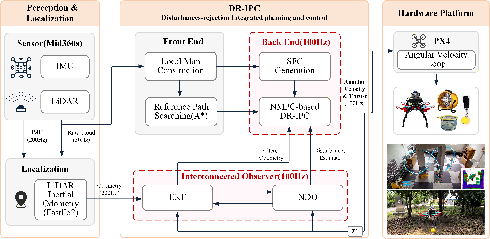

Throwing Ball Impact in Hover
Suspended-Payload Transportation with Wind
Suspended-Payload Transportation with Dynamic Obstacle
Outdoor Experiments
Outdoor Flight at Night
Disturbance-resilient UAV transport in a cluttered factory: scenario 1
Disturbance-resilient UAV transport in a cluttered factory: scenario 2


BibTeX
@article{liu2026dripc,
title={DR-IPC: Disturbance-Resilient Integrated Planning and Control for LiDAR-Based Quadrotor Navigation},
author={Liu, Peng and Wang, Jingyan and Ye, Qipeng and Li, Wen and Su, Jinya and Wang, Zuo and Li, Shihua and Yan, Yunda},
year={2026}
}